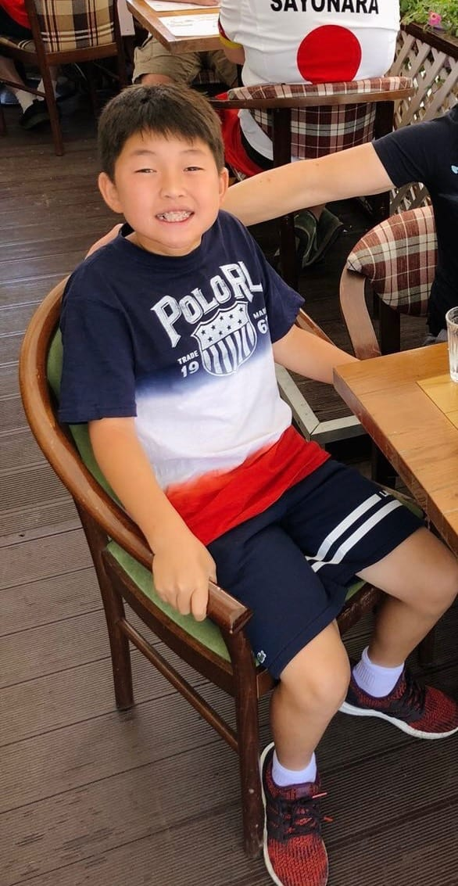

When I was very little, I had an obsession with food. I would always satisfy my hunger with snacks, eating out often, and having a lot of sugary drinks. I never thought it was a big deal, and my parents didn't seem to notice. My parents were very busy, so when I was little, I would find myself at home with my grandma often. My grandma loved me dearly; however, she believed that feeding me whatever I wanted and making sure that I was well-fed was a top priority, even when the amount I was given became excessive. This quickly grew into a habit, and I began gaining a lot of weight, being at risk of high blood pressure at a very young age. My peers around me would make backhanded comments, and I started feeling self-conscious about my weight and my appearance. I began getting teased for how much I ate, and my self-esteem started to plunge.
Enrolling in soccer helped me lose some weight; however, soccer alone could not stop my eating habits. I started taking my health into my own hands, eating cleaner, cutting calories, and consuming less junk food. I, of course, started to lose a lot of weight, and got lots of compliments from my teachers, friends, and family for losing so much weight. Even after getting to a healthy weight, the confidence and feeling I felt being told how skinny I became slowly turned from a positive comment into an unhealthy obsession. I continued to cut calories, started paying more attention to some physical traits such as the diameter of my wrist, forearms, and specifically my shoulders. I began remembering the number of calories in apple slices, gum, a bowl of rice, certain candies, carrots, cucumbers, you name it. I started skipping meals in school, all to continue to lose weight and see the numbers drop on the scale. I felt uncomfortable in my own skin if I woke up to see I hadn't lost any weight.
Shoulders have always been a physical trait that I scrutinized very closely in myself. I was born with broad shoulders, and this haunted me in my past. I scrunched my shoulders in pictures, trying to make my shoulders look less boxy in hopes of better matching my image of an "ideal body." Food and weight were all I cared about, all I spent my time on. I would spend hours upon hours managing what I ate, tracking what I was going to eat, and assessing if my body was changing how I wanted it to change.
One day at school, I followed my routine at school: throwing away my lunch in the trash can and pretending to be done eating. I waited for my friends to finish their lunches so that we could spend the remaining time playing and having fun. Until one of my friends asked me, pondering why I threw away my lunch. This simple question made me freeze. Why was I throwing away my lunch? Why was I throwing away the food and nutrients that my grandma packed for me with love and care, hoping that I would enjoy them? I felt guilt, shame, and embarrassment. My friend looked at me, almost shocked, at why I would throw away the food that my grandma took so long to pack for me. That day completely changed my eating behaviors, shockingly. That one interaction highlighted to me that my actions seemed foreign to the children around me, and that I needed to stop.
I looked at myself, comparing myself with other kids who were happier, healthier, and weighed more than me. I realized that my obsessions with my weight and appearance were a byproduct of a larger issue: my self-confidence and self-esteem. I think the biggest factor that helped me in my recovery was the fact that I had friends who cared about me, and I had people who loved me. I had finally solved the problem I so desperately tried to fix myself, and with it, I found a way to love myself like how the rest of my peers and family loved me.
The broad shoulders that I once despised so much, that I would cry over, feeling ashamed I was born this way, are something that I admire and feel proud of. The body that I once felt embarrassed to call my own stayed by my side no matter how much I tossed it aside, waiting for me to finally return and embrace it with love. Looking back, I realized that my shoulders never were a problem. They were something that carried the insecurity that I placed on myself through observing others and creating a disjointed idea of perfection in my mind. I spent my childhood trying to change my body, trying to get skinnier, thinner, and smaller. However, I realized that happiness has never hid behind a scale or been shown in the mirror when you look at yourself. Happiness was in the moments where I stopped treating myself as the enemy and started showing care and love towards myself. Happiness is finally accepting yourself for who you are.
My grandma packed my lunches as a way to say I love you. My grandma put her love, care, and warmth into every box, hoping that it would make me healthy. Somewhere along the way, I started seeing food as something to fear and control, rather than something to enjoy and something to make you healthy and nourished. Sometimes today, I still find myself gazing a little too long in the mirror. However, I never make myself smaller, I never scrutinize small details about myself, and I never scrunch my shoulders up. I stand proud in front of the mirror and feel pride in who I am today and how far I have come, and I stand as tall as I can muster. The broad shoulders that I once was embarrassed by embody something completely different today: strength. Strength to carry your insecurities, your history, and your difficulties, and still choose to move forward.
Support
Resources & Support
If this story resonated with you or reflects challenges you may be experiencing, the following organizations provide support and helpful resources.
Broad Shoulders Initiative is not a crisis service, medical provider, or therapy provider. If support feels urgent, please contact emergency services, a trusted adult, a school counselor, or a licensed professional.